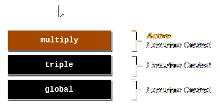
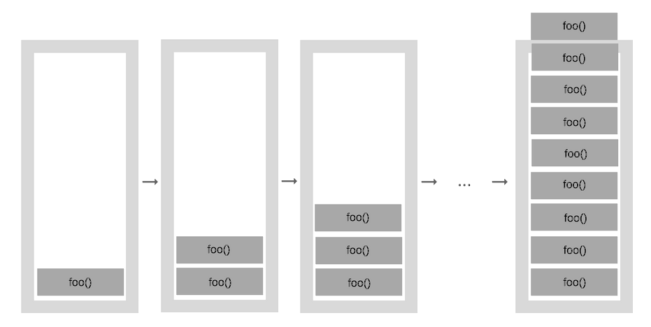

Runtime engines consist of two main components:
All JavaScript code runs within the scope of
what is known as an Execution Context
const FACTOR_OF_THREE = 3;
function multiply(a,b){
return a * b;
}
function triple(a){
return multiply(a, FACTOR_OF_THREE);
}
triple(10);

If the maximum call stack size is exceeded
the
program terminates with a RangeError
function foo() {
foo(); // call foo recursively forever
}
foo();

While executing code, the runtime engine goes through two different phases multiple times, until there is no more code to run
It is possible to conceptually represent each
execution context (EC)
as an object with three properties
When a function is activated (called), the interpreter scans the function for arguments and local variables or local function declarations
function foo(x, y) {
const z = 30;
function bar() {}
}
foo(10, 20);
The result of this scan becomes the Activation
object
and is the reason why hoisting occurs
Container of Activation Objects for the executing function lexical scope
let oranges = 10;
function printOranges() {
console.log(oranges);
}
function printMoreOranges() {
let oranges = 11;
printOranges();
}
printMoreOranges(); // what is the output?
The implicit this argument is available inside functions
function getThis() {
console.log(this);
}
const getThisArrow = () => {
console.log(this);
};
const obj1 = {
name: "obj1",
getThis,
getThisArrow,
};
const obj2 = {
name: "obj2",
};
getThis(); // "window"
obj1.getThis(); // "obj1"
getThis.call(obj2); // "obj2"
new getThis(); // "{}"
//Arrow functions are special
getThisArrow(); //"window"
obj1.getThisArrow(); // "window"
The implicit this binding can produce strange results
//get a collection of all button elements on the page
const buttons = document.querySelectorAll("button");
for (var i = 0; i < buttons.length; i++) {
buttons[i].onclick = function () {
// log the button pressed to the console
console.log(this.innerText + " was pressed!");
// make sure every button on page is only pressed once
disableButton();
};
}
function disableButton() {
this.disabled = true;
}
How do you fix this?
The methods bind, call and
apply allow explicit control
over the this argument binding
function compose(prefix, suffix) {
console.log(prefix + this + suffix);
}
// create a new function with a statically set this argument
const compose2 = compose.bind("Rui");
compose2("Hello ", "!");
// call an existing function with an explicitly provided this argument
compose.call("Rui", "Hello ", "!"); // passing arguments as usual
compose.apply("Rui", ["Hello ", "!"]); // passing arguments as an array
JavaScript makes it possible to use one object's
method
on a totally different object
// this blows up, the arguments object lacks the native array methods
function upperCaseArguments() {
return arguments.map(arg => arg.toUpperCase());
}
// this is really smart :)
function upperCaseArguments() {
// invoke the array slice method on top of the arguments object
const argsAsArray = [].slice.call(arguments);
return argsAsArray.map(arg => arg.toUpperCase());
}
Back in the day, this was a common pattern to
convert the arguments object to an array before the
spread operator was introduced
Arrow functions do not have their own this binding they inherit the this value from the enclosing lexical context
const contextObject = {
name: "context-object",
action: function() {
console.log("enclosing function", this);
const anonTest = function() {
console.log("anonymous function", this);
};
const arrowTest = () => {
console.log("arrow function", this);
};
anonTest();
arrowTest();
},
};
contextObject.action(); //contextObject, Window, contextObject
Accessing variables up the scope chain will make the interpreter preserve the corresponding EC and create what is called a closure
const twice = multiplier(2);
console.log(twice(5));
function multiplier(factor) {
return function (number) {
return number * factor;
};
}
The AO created upon the execution of multiplier is preserved and available during the execution of twice
Closures seem complex at first, but they are a powerful tool with many practical use cases, allowing for creative, expressive and concise code
Closures can be utilized to
emulate the concept of classes
with
public and private members
const secretFactory = function (secret, key) {
let tries = 3;
return {
get: function (secretKey) {
tries -= 1;
return tries > 0 && key === secretKey ? secret : null;
},
};
};
const secret1 = secretFactory("coca-cola recipe", 1234);
const secret2 = secretFactory("a message", "password");
console.log(secret1.get("1234")); // null
console.log(secret1.get()); // null
console.log(secret1.get("password")); // null
console.log(secret1.get(1234)); // null, secret has been destroyed
console.log(secret2.get("password")); // a message
Closures together with lexical scope can produce
strange results
Remember the var keyword?
var funcs = [];
for (var i = 0; i < 3; i++) {
// push will create new execution context with reference to i
funcs.push(function() {
console.log(i);
});
}
funcs[0](); // 3
funcs[1](); // 3
funcs[2](); // 3
How do you fix this?
In some other languages we have a concept of classes, which are blueprints for objects.
In JavaScript we didn't have this concept and had to find a way to emulate it...
function Person(name, age, favoriteFood) {
return {
name,
age,
favoriteFood,
};
}
const john = Person("John", 25, "Pizza");
const nozk = Person("Nozk", 25, "Ramen");
nozk.toString(); // [object Object]
this is still not a class, it's just a function that returns an object. We can't create instances of it, we can't extend it, we can't do anything that we can do with classes in other languages...
... or can we?Almost every object in JavaScript has a prototype.
const emptyObject = {}; // Object.create(Object.prototype);
// toString doesn't exist in emptyObject, but it exists in its prototype
emptyObject.toString();
// emptyObject prototype points to the Object prototype
console.log(emptyObject.getPrototypeOf());
When an object literal is created, it's prototype is set to the Object prototype.
So the idea is to create an object, with a given structure and behavior
const john = {};
Person.call(john, "John", 25, "Pizza");
john.tellInfo(); // My name is John, I'm 25 years old and I love Pizza
//Functions are also objects...
function Person(name, age, favoriteFood) {
this.name = name;
this.age = age;
this.favoriteFood = favoriteFood;
}
// ... and they have a prototype for the shared behavior between instances
Person.prototype.tellInfo = function () {
return `My name is ${this.name}, I'm ${this.age} years old and I love ${this.favoriteFood}`;
};
const john = Object.create(Person.prototype);
Person.call(john, "John", 25, "Pizza");
john.tellInfo(); // My name is John, I'm 25 years old and I love Pizza
the instance prototype points to the Person prototype
What we just created is a constructor function. Now this looks a lot more like a class, right?
function Person(name, age, favoriteFood) {
this.name = name;
this.age = age;
this.favoriteFood = favoriteFood;
}
Person.prototype.tellInfo = function () {
return `My name is ${this.name}, I'm ${this.age} years old and I love ${this.favoriteFood}`;
};
const john = new Person("John", 25, "Pizza");
A constructor function is used to create multiple instances of the same type of objects, all delegating to a common prototype.
They should only be used with the new operator and should be capitalized for readabilityES6 introduced syntactic sugar to abstract us from prototypes.
class Person {
constructor(name, age, favoriteFood) {
this.name = name;
this.age = age;
this.favoriteFood = favoriteFood;
}
tellInfo() {
return `My name is ${this.name}, I'm ${this.age} years old and I love ${this.favoriteFood}`;
}
}
const john = new Person("John", 25, "Pizza");
The extends keyword is used to create a is a relationship between two classes.
class Animal {
constructor(name) {
this.name = name;
}
speak() {
return `${this.name} makes a noise`;
}
}
class Person extends Animal {
constructor(name, age, favoriteFood) {
super(name);
this.age = age;
this.favoriteFood = favoriteFood;
}
tellInfo() {
return `My name is ${this.name}, I'm ${this.age} years old and I love ${this.favoriteFood}`;
}
}
const nozk = new Person("Nozk", 30, "Ramen");
nozk.speak(); // Nozk makes a noise
nozk.tellInfo(); // My name is Nozk, I'm 30 years old and I love Ramen
When the JS engine encounters an erroneous situation, it's normal flow is interrupted by doing what is known as throwing an error:
const x = 2; // this line will never be executed
console.log(x);
// this line will trigger an early syntax error
console.log(x + 1;
Syntax errors normally occur early, but sometimes
they can occur at runtime as well
const x = 2;
console.log(x); // prints the value 2
// this line will trigger a runtime syntax error
const y = new Function("console.log(x + 1;");
It is possible to mark a block of statements in the
code and
specify a response if an error is thrown at
runtime
try {
const myObject = {};
myObject.method(); // throws an error
} catch (err) {
console.log("An error has occurred: ", err);
} finally {
console.log("Error has been handled!");
}
JavaScript error handling is typically performed
through the
generic Error constructor or one of
it's subconstructors
try {
const myObject = {};
myObject.method(); // throws an error
} catch (err) {
console.log(typeof err); // object
console.log(err instanceof Error); // true
console.log(err instanceof TypeError); // true
// print a human readable description of the error
console.log(err.name + ": " + err.message); // TypeError: myObject.method is not a function
if (debug) {
// dump the full stack trace to the console
console.log(err.stack);
}
}
An error can be thrown to signal a
runtime
error in the execution of the code
The execution of the current function will stop
and control passed to the first
catch clause in the call stack
function doSomethingRisky() {
throw new Error("something went wrong...");
}
try {
doSomethingRisky();
} catch (err) {
console.log(err.name); // Error
console.log(err.message); // something went wrong
}
If no catch clause exists, the program will be terminated
You can throw anything, but it is a good ideia to throw Error objects onlyYou can also extend from Error to create custom error types
class CustomError extends Error {
constructor(message, module) {
super(message);
this.name = "CustomError";
this.module = module;
}
}
try {
throw new CustomError("wrong credentials", "authentication");
} catch (e) {
console.log(e.name + ": " + e.module + " - " + e.message);
console.log(e.stack);
}
The Service module should return the following API: